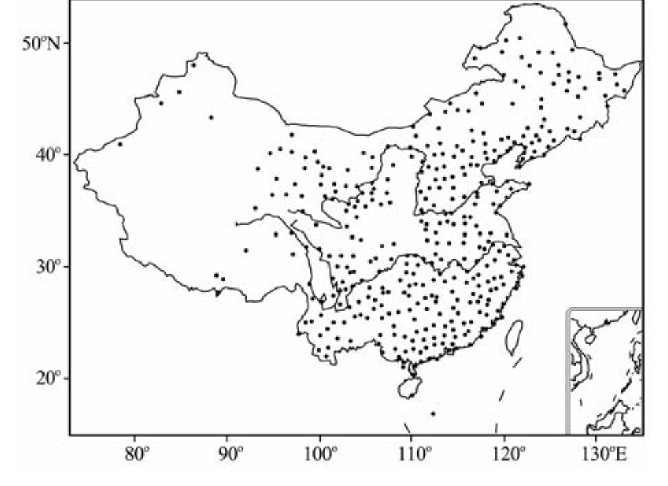
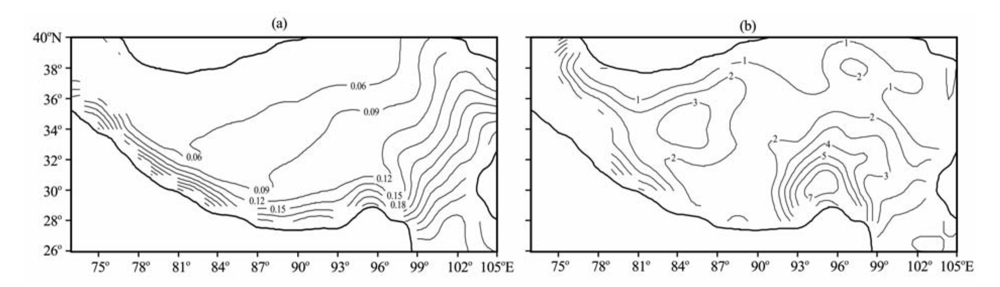
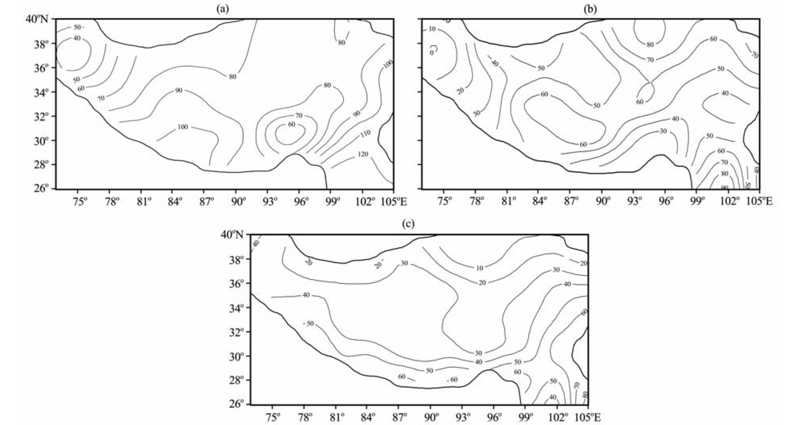
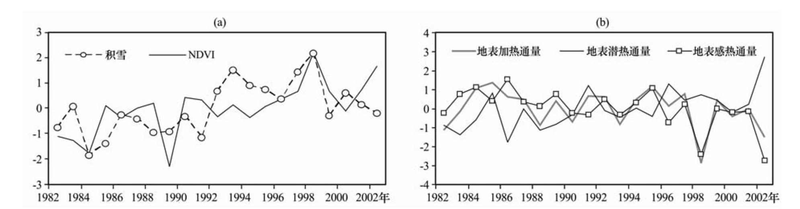
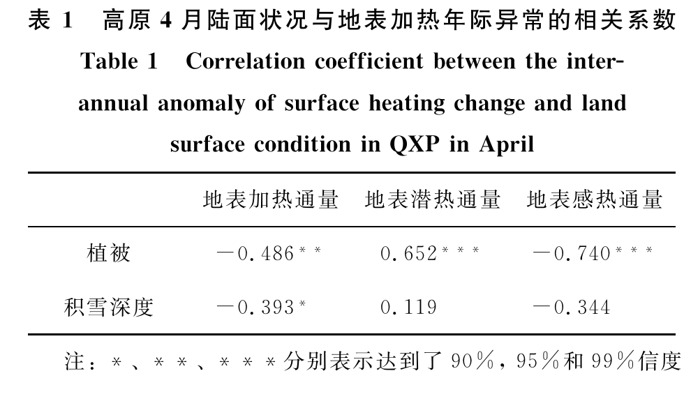
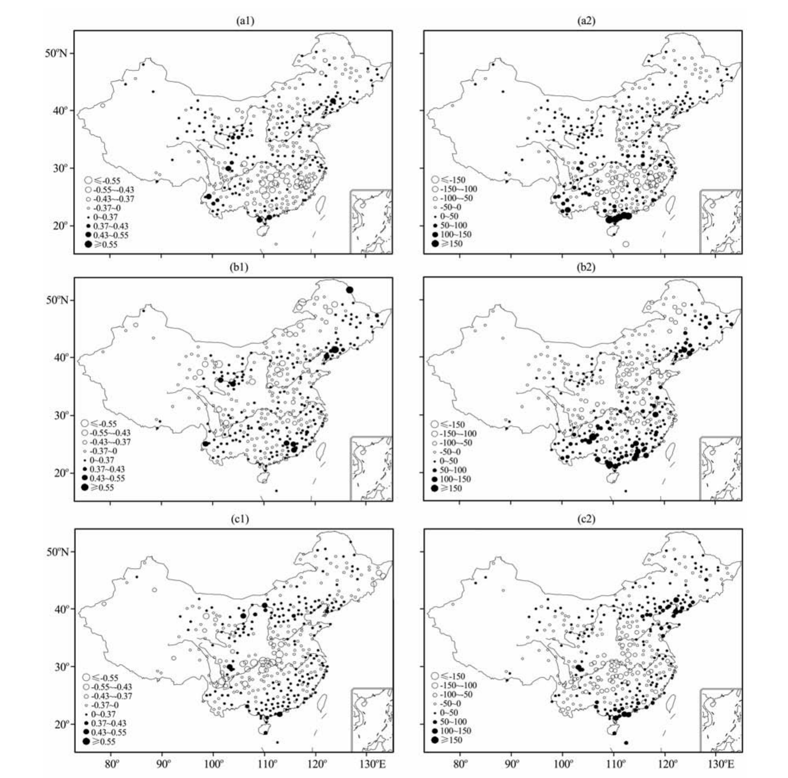
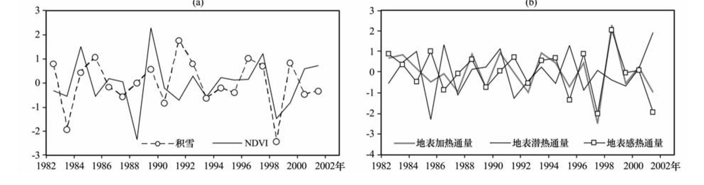
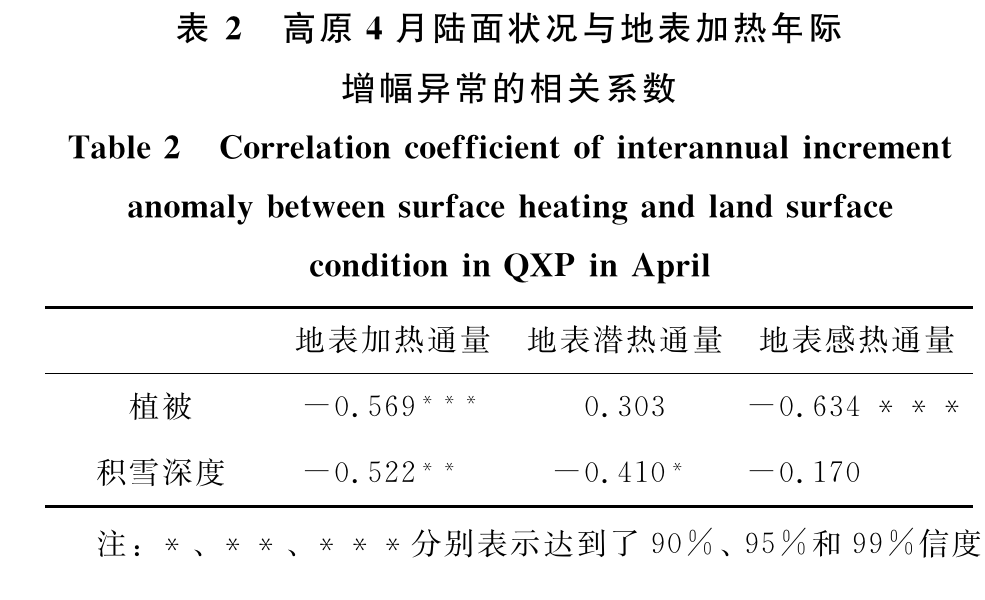
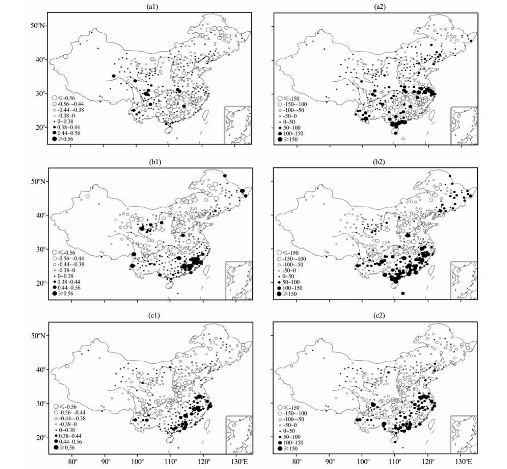

首页信息、摘要与元数据Front Matter, Abstract, and Metadata
青藏高原4月陆面状况和地表加热异常与中国夏季降水的联系
Possible Linkages among Anomalous Land Surface Condition, Surface Heating in Qinghai-Xizang Plateau in April and Summer Precipitation in China
于琳琳¹⁻³，陈海山¹⁻²*
YU Lin-lin¹⁻³, CHEN Hai-shan¹⁻²*
（1. 南京信息工程大学 气象灾害教育部重点实验室，江苏 南京 210044；2. 南京信息工程大学 大气科学学院，江苏 南京 210044；3. 吉林省长春市双阳区气象局，吉林 长春 130600）
(1. Key Laboratory of Meteorological Disaster, Ministry of Education, Nanjing University of Information Science & Technology, Nanjing 210044, Jiangsu, China; 2. College of Atmospheric Sciences, Nanjing University of Information Science & Technology, Nanjing 210044, Jiangsu, China; 3. Shuangyang District Meteorological Bureau, Changchun 130600, Jilin, China)
于琳琳，陈海山. 青藏高原4月陆面状况和地表加热异常与中国夏季降水的联系［J］. 高原气象，2012，31（5）：1173—1182.
Yu Linlin and Chen Haishan. Possible Linkages among Anomalous Land Surface Condition, Surface Heating in Qinghai-Xizang Plateau in April and Summer Precipitation in China [J]. Plateau Meteorology, 2012, 31(5): 1173–1182.
摘要
Abstract
利用1981—2002年GIMMS-NDVI资料、中国西部数据中心提供的雪深长时间序列数据集、中国753个测站降水资料及ECMWF再分析地表通量资料，通过相关和合成分析等统计方法，探讨了青藏高原（下称高原）4月植被覆盖、积雪异常与地表加热异常和与后期中国夏季降水之间的联系。
Using 1981–2002 GIMMS-NDVI data, the long-term snow-depth dataset provided by the Western China Data Center, precipitation data from 753 stations in China, and ECMWF reanalysis surface-flux data, this study applies statistical methods including correlation and composite analyses to investigate the relationships between April vegetation-cover and snow anomalies over the Qinghai–Xizang Plateau (hereafter, the Plateau), surface-heating anomalies, and subsequent summer precipitation in China.
结果表明，高原4月的陆面状况与同期的地表加热存在密切的联系，植被覆盖和积雪深度的变化具有较好的一致性；高原植被覆盖（积雪）主要影响地表感热（潜热）通量，从而改变高原地区的地表加热；高原地表加热和中国夏季降水存在较为密切的关系。
The results show that the Plateau's land-surface conditions in April are closely related to concurrent surface heating, and changes in vegetation cover and snow depth are broadly consistent; vegetation cover (snow) over the Plateau primarily affects the surface sensible-heat (latent-heat) flux, thereby altering surface heating over the Plateau; and surface heating over the Plateau is closely related to summer precipitation in China.
就年际异常而言，前期高原地表加热异常与长江以南地区6月降水存在明显的负相关，与7月降水的显著负相关区域主要位于华北、东北地区，与8月降水的显著负相关区主要位于长江中上游及淮河一带。
In terms of interannual anomalies, earlier surface-heating anomalies over the Plateau are significantly negatively correlated with June precipitation south of the Yangtze River; the region of significant negative correlation with July precipitation lies mainly in North China and Northeast China; and that with August precipitation lies mainly in the middle and upper reaches of the Yangtze River and the Huaihe River region.
相比之下，前期高原地表加热与夏季降水的年际增幅异常之间存在更为密切的联系，即前期高原地表加热年际增幅异常与长江以南及西南部分地区6月降水年际增幅异常为负相关，而与7、8月降水年际增幅异常主要呈南正北负的分布特征。
By comparison, earlier surface heating over the Plateau is more closely related to interannual-increment anomalies of summer precipitation: the interannual-increment anomaly of earlier surface heating is negatively correlated with the interannual-increment anomaly of June precipitation south of the Yangtze River and in parts of Southwest China, whereas its relationship with the interannual-increment anomaly of July and August precipitation is characterized mainly by a south-positive/north-negative spatial pattern.
关键词：青藏高原；陆面状况；地表加热；中国夏季降水；年际异常；年际增幅
Keywords: Qinghai–Xizang Plateau; land-surface condition; surface heating; summer precipitation in China; interannual anomaly; interannual increment
文章编号：1000-0534（2012）05-1173-10 中图分类号：P461 文献标志码：A
Article number: 1000-0534(2012)05-1173-10; Chinese Library Classification: P461; Document code: A
收稿日期：2011-05-23；定稿日期：2012-03-31
Received: 2011-05-23; accepted in final form: 2012-03-31
基金项目：国家自然科学基金项目（40975057）；公益性行业专项（GYHY201206017）；甘肃省科技重大专项（1001JKDA001）；江苏省“333工程”和江苏高校优势学科建设工程资助项目（PAPD）共同资助
Funding: jointly supported by the National Natural Science Foundation of China (40975057); the Public-Interest Industry Special Project (GYHY201206017); the Major Science and Technology Project of Gansu Province (1001JKDA001); Jiangsu Province's “333 Project”; and the Priority Academic Program Development of Jiangsu Higher Education Institutions (PAPD).
作者简介：于琳琳（1984—），女，吉林德惠人，硕士，主要从事陆气相互作用研究。E-mail：yulinlin1753@126.com
Author biography: Yu Linlin (1984–), female, from Dehui, Jilin; M.S.; primarily engaged in land–atmosphere interaction research. E-mail: yulinlin1753@126.com
* 通讯作者：陈海山。E-mail：haishan@nuist.edu.cn
* Corresponding author: Chen Haishan. E-mail: haishan@nuist.edu.cn
1 引言1 Introduction
1 引言
1 Introduction
青藏高原（下称高原）因其特殊的地形分布，通过大地形的机械动力作用和热力作用对气候产生重要的影响。
Because of its distinctive topographic configuration, the Qinghai–Xizang Plateau (hereafter, the Plateau) exerts a major influence on climate through the mechanical-dynamic and thermal effects of its vast terrain.
早在1957年，科学家们就开始了对高原热力作用的研究［1—2］，指出正是由于高原加热的季节性差异激发了亚洲夏季风的爆发；之后，有关高原热力作用及其影响的研究一直是气候研究的焦点之一。
Scientists began studying the Plateau's thermal effect as early as 1957 [1–2], pointing out that seasonal differences in Plateau heating trigger the onset of the Asian summer monsoon; research on the Plateau's thermal effect and its impacts has since remained a major focus of climate research.
关于高原热力作用及其影响的研究主要包括：高原热力作用对大气环流的影响［3—11］、高原加热异常对亚洲夏季风的影响［12—13］和高原热力作用对中国夏季降水的影响［14—20］。
Research on the Plateau's thermal effect and its impacts has mainly addressed the influence of the Plateau's thermal effect on atmospheric circulation [3–11], the influence of anomalous Plateau heating on the Asian summer monsoon [12–13], and the influence of the Plateau's thermal effect on summer precipitation in China [14–20].
陆面作为大气运动的重要下边界条件之一，与大气间时刻进行着动量、能量及物质的交换；陆面状况异常通过改变地—气系统间的能量交换，从而影响大气环流和气候［3，21—28］。
As an important lower-boundary condition for atmospheric motion, the land surface continuously exchanges momentum, energy, and matter with the atmosphere; anomalous land-surface conditions alter energy exchange within the land–atmosphere system and thereby affect atmospheric circulation and climate [3, 21–28].
植被和积雪是高原地区两种最为重要的陆面覆盖类型［34—36］。
Vegetation and snow are the two most important types of land-surface cover over the Plateau [34–36].
积雪通过改变地表反照率对陆面的净辐射产生影响，其相变过程影响地—气间的物质和能量交换；植被通过其生物物理过程影响地—气间的物质和能量交换。
Snow affects net radiation at the land surface by changing surface albedo, and its phase transitions affect the exchange of matter and energy between land and atmosphere; vegetation affects that exchange through its biophysical processes.
陈海山等［37］通过数值模拟证实，有、无植被覆盖时积雪—土壤系统的变化过程存在显著的差别；植被的存在有利于积雪的维持，使得积雪融化进程推迟。
Through numerical simulations, Chen Haishan et al. [37] showed that the evolution of the snow–soil system differs significantly between cases with and without vegetation cover; vegetation favors the persistence of snow and delays snowmelt.
已有研究重点从植被和积雪异常两方面考察了高原陆面状况的异常变化对地表热源及区域气候的影响［3，26，29—33］。
Previous studies have mainly examined, from the perspectives of vegetation and snow anomalies, how anomalous changes in land-surface conditions over the Plateau affect the surface heat source and regional climate [3, 26, 29–33].
但是由于积雪的异常变化与植被覆盖关系密切，二者的相互作用和联系是不容忽视的。
However, because anomalous changes in snow are closely related to vegetation cover, the interaction and connection between the two cannot be ignored.
因此，单独考虑植被或积雪异常变化与地表热源和气候的联系是不全面的。
It is therefore incomplete to consider in isolation the relationship of either vegetation or snow anomalies with the surface heat source and climate.
高原4月的降雪量是一年中两个峰值之一［38］，此时高原大气热源具有一致变化［39］，大气热源在很大程度上受地表加热的影响。
April snowfall over the Plateau represents one of its two annual peaks [38]; at this time the Plateau's atmospheric heat source changes in a coherent manner [39] and is influenced to a large extent by surface heating.
正是基于上述考虑，本文选取高原4月陆面状况和地表加热作为研究对象，试图寻找高原4月陆面植被、积雪异常与地表加热和中国夏季降水的可能联系，以期为深入理解高原陆面过程和高原加热异常对中国夏季降水影响的物理机制提供一些线索。
On this basis, the study focuses on April land-surface conditions and surface heating over the Plateau, seeking possible links among April land-surface vegetation and snow anomalies, surface heating, and summer precipitation in China, in order to provide clues for a deeper understanding of the physical mechanisms through which Plateau land-surface processes and heating anomalies affect summer precipitation in China.
2 资料选取和方法介绍2 Data Selection and Methods
2 资料选取和方法介绍
2 Data Selection and Methods
2.1 资料选取
2.1 Data Selection
本文采用1951—2005年中国753个测站逐日降水资料，选取有降水观测且迁站距离＜20 km的380个测站作为研究对象，380个测站分布如图1所示。
The study uses daily precipitation data from 753 stations in China for 1951–2005 and selects as its study sample the 380 stations that have precipitation observations and whose relocation distances were <20 km; the distribution of these 380 stations is shown in Fig. 1.
为了与其他资料统一，将逐日降水资料转化为月累积降水量。
For consistency with the other datasets, the daily precipitation data are converted to monthly accumulated precipitation.

图1 中国380个测站分布
Fig. 1 The geographic distribution of 380 stations in China
刘晓冉等［19］研究指出，欧洲中期天气预报中心（European Centre for Medium-Range Weather Forecasts，ECMWF）的地表通量再分析资料在高原地区具有一定的代表性，由于其他的观测资料相对短缺，本文选用1957年9月—2002年8月分辨率为2.5°×2.5°的ECMWF逐月地表通量再分析资料来反映高原地表加热状况。
Liu Xiaoran et al. [19] found that surface-flux reanalysis data from the European Centre for Medium-Range Weather Forecasts (ECMWF) have a degree of representativeness over the Plateau. Because other observations are relatively scarce, this study uses monthly ECMWF surface-flux reanalysis data from September 1957 to August 2002 at 2.5° × 2.5° resolution to represent surface-heating conditions over the Plateau.
植被资料选取NOAA/NASA Pathfinder卫星观测，由全球监测与模型研究所（Global Inventory Modeling and Mapping Studies，GIMMS）提供的1981年7月—2002年12月1.0°×1.0°的逐月归一化植被指数NDVI资料。
For vegetation, the study uses monthly normalized difference vegetation index (NDVI) data at 1.0° × 1.0° resolution for July 1981–December 2002, derived from NOAA/NASA Pathfinder satellite observations and provided by Global Inventory Modeling and Mapping Studies (GIMMS).
积雪资料由中国西部数据提供，该数据集是基于美国国家冰雪数据中心（National Snow and Ice Data Center，NSIDC）1978—1987年的被动微波遥感扫描式多通道微波辐射计（Scanning Multichannel Microwave Radiometer，SMMR）和1987—2005年专用微波成像仪（Special Sensor Microwave/Image，SSM/I）亮温资料反演得到的25 km×25 km中国雪深长时间序列数据集，雪深单位为cm。
Snow data are provided by the Western China Data Center. This long-term 25 km × 25 km snow-depth dataset for China, expressed in cm, was retrieved from passive-microwave brightness-temperature data archived by the National Snow and Ice Data Center (NSIDC): Scanning Multichannel Microwave Radiometer (SMMR) data for 1978–1987 and Special Sensor Microwave/Imager (SSM/I) data for 1987–2005.
参照Ye et al.［40］的方法，将逐日雪深资料处理为逐月资料。
Following the method of Ye et al. [40], daily snow-depth data are processed into monthly data.
此外，在本研究中选取的高原范围为73.0°—105°E，26°—40°N，且海拔在1 500 m以上的地区，各物理量的时段均统一选为1981年7月—2002年8月。
In addition, the Plateau domain selected in this study is 73.0°–105°E, 26°–40°N, restricted to elevations above 1,500 m, and the period for all physical variables is standardized to July 1981–August 2002.
2.2 研究方法
2.2 Research Methods
本文主要通过相关分析等统计方法来探讨高原4月地表加热和中国夏季降水与该地区陆面状况异常变化之间的可能联系。
This study mainly uses statistical methods such as correlation analysis to investigate possible links between April surface heating over the Plateau and summer precipitation in China, on the one hand, and anomalous changes in land-surface conditions over the region, on the other.
高原的陆面状况主要考虑了积雪深度和植被NDVI这两个要素。
Land-surface conditions over the Plateau are represented primarily by two variables: snow depth and vegetation NDVI.
采用地表加热通量Q来反映高原地区的地表加热，即：
The surface-heating flux Q is used to represent surface heating over the Plateau:
Q = Sₕ + Lₕ， （1）
Q = Sₕ + Lₕ. (1)
其中：Lₕ为地表潜热通量；Sₕ为地表感热通量。
Here, Lₕ is the surface latent-heat flux and Sₕ is the surface sensible-heat flux.
为了研究高原4月陆面状况、地表加热和中国夏季降水的关系，对某物理量A将从年际异常和年际增幅异常两个方面考察：
To examine the relationships among April land-surface conditions and surface heating over the Plateau and summer precipitation in China, a physical variable A is evaluated from two perspectives: its interannual anomaly and its interannual-increment anomaly.
（1）年际异常，即距平值：
(1) Interannual anomaly, i.e., the departure from the mean:
Aₜ⁰ = Aₜ − A̅， （2）
Aₜ⁰ = Aₜ − A̅. (2)
其中：A̅ =（1/N）∑ₜ₌₁ᴺ Aₜ。
Here, A̅ = (1/N) ∑ₜ₌₁ᴺ Aₜ.
（2）年际增幅异常，即：
(2) Interannual-increment anomaly:
ΔAₜ⁰ = ΔAₜ − ΔA̅ₜ， （3）
ΔAₜ⁰ = ΔAₜ − ΔA̅ₜ. (3)
其中：ΔAₜ = Aₜ₊₁ − Aₜ，ΔA̅ₜ =［1/（N−1）］∑ₜ₌₁ᴺ⁻¹ ΔAₜ。
Here, ΔAₜ = Aₜ₊₁ − Aₜ and ΔA̅ₜ = [1/(N−1)] ∑ₜ₌₁ᴺ⁻¹ ΔAₜ.
年际增幅的概念是范可等［41—42］在研究长江中下游流域夏季降水预报问题时提出的，并认为年际增幅能很好地表示降水气候变化特征，提高了对长江中下游降水的预测水平；王会军等［43］从数学和物理方面论证了年际增幅可作为短期气候预测的预报对象。
Fan Ke et al. [41–42] introduced the concept of the interannual increment while studying summer-precipitation prediction for the middle and lower Yangtze River basin, arguing that it represents climatic changes in precipitation well and improves precipitation prediction for the basin; Wang Huijun et al. [43] demonstrated mathematically and physically that the interannual increment can serve as a predictand for short-term climate prediction.
本文的A可指NDVI、地面加热及降水量等。
In this study, A may denote NDVI, surface heating, precipitation, and related quantities.
3 高原4月陆面状况和地表加热变化的基本特征3 Basic Characteristics of April Land-Surface Conditions and Surface Heating
3 高原4月陆面状况和地表加热变化的基本特征
3 Basic Characteristics of April Land-Surface Conditions and Surface-Heating Variability over the Plateau
为了探讨陆面状况和地表加热之间的关系，首先考察高原地区陆面状况和地表加热场多年平均的空间分布特征。
To investigate the relationship between land-surface conditions and surface heating, the climatological spatial distributions of land-surface conditions and surface-heating fields over the Plateau are first examined.
图2给出了高原4月植被覆盖和积雪深度的多年平均空间分布。
Figure 2 shows the climatological spatial distributions of April vegetation cover and snow depth over the Plateau.
从图2a中可以看出，高原地区4月NDVI自东南向西北逐渐减小，藏南谷地东南侧、云贵高原及陇中高原为植被覆盖的大值区，而三江源地区植被覆盖强于相邻地区，且在此处植被变化梯度沿江而上，向江河源头方向NDVI值逐渐变小，高原西北部NDVI值＜0.1，地表以稀疏植被和荒漠戈壁为主。
Figure 2a shows that April NDVI over the Plateau gradually decreases from southeast to northwest. High vegetation cover occurs southeast of the southern Xizang valley, over the Yunnan–Guizhou Plateau, and over the central Gansu Plateau; vegetation cover in the Sanjiangyuan region is stronger than in adjacent areas, and there the vegetation gradient follows the rivers upstream, with NDVI gradually decreasing toward the river headwaters. In the northwestern Plateau, NDVI is <0.1 and the surface is dominated by sparse vegetation and desert–Gobi terrain.
积雪深度的大值区主要分布在高原东南部的念青唐古拉山地区，并以此为中心向周围地区积雪深度逐渐减小。
The region of greatest snow depth is mainly located around the Nyainqêntanglha Mountains in the southeastern Plateau, from which snow depth gradually decreases outward.
此外，积雪深度在高原西南侧边缘及藏北高原西部存在弱的相对大值中心（图2b）。
In addition, weak relative maxima in snow depth occur along the southwestern margin of the Plateau and in the western part of the northern Xizang Plateau (Fig. 2b).
总体而言，高原地区4月的植被覆盖与雪深多年平均分布大体都呈由东南向西北递减的分布特征。
Overall, the climatological April distributions of vegetation cover and snow depth over the Plateau both generally decrease from southeast to northwest.

图2 高原4月多年平均NDVI（a）和积雪深度（b，单位：cm）的空间分布
Fig. 2 Spatial distributions of multi-year mean NDVI (a) and snow cover depth (b, unit: cm) in Qinghai-Xizang Plateau(QXP) in April
图3为高原4月地表加热、潜热及感热通量的多年平均空间分布。
Figure 3 presents the climatological spatial distributions of April surface heating and latent- and sensible-heat fluxes over the Plateau.
从图3中可看出，高原4月地表加热各量均为正值，即表现为地表对大气的加热。
Figure 3 shows that all components of April surface heating over the Plateau are positive, indicating heating of the atmosphere by the surface.
高原4月地表加热大体呈现自东向西“强—弱”相间分布格局，其中高原西南地区及其东南部边缘的地表加热最强，而雅鲁藏布大峡谷和帕米尔高原附近地区的加热较弱（图3a）。
April surface heating over the Plateau generally exhibits an alternating east-to-west “strong–weak” spatial pattern: it is strongest over the southwestern Plateau and along its southeastern margin, but weaker near the Yarlung Zangbo Grand Canyon and the Pamir Plateau (Fig. 3a).
地表感热分量的空间分布与地表加热的分布总体类似，大值中心主要出现在高原东南部和西南部，而在高原东部和西部帕米尔高原地区的感热加热相对较弱（图3b）。
The spatial distribution of the surface sensible-heat component is broadly similar to that of total surface heating, with major maxima over the southeastern and southwestern Plateau and relatively weak sensible heating over the eastern Plateau and the Pamir Plateau in the west (Fig. 3b).
高原地表潜热通量整体由南向北逐渐减弱，除在雅鲁藏布大峡谷地区变化梯度较大外，其他地区变化较平缓（图3c）。
The surface latent-heat flux over the Plateau generally weakens from south to north; except for a relatively large gradient around the Yarlung Zangbo Grand Canyon, spatial variations elsewhere are gradual (Fig. 3c).
整体而言，高原地表感热加热强于潜热加热，也就是说，感热加热对高原地表加热的贡献相对较大。
Overall, sensible heating is stronger than latent heating at the Plateau surface; in other words, sensible heating makes the larger contribution to surface heating over the Plateau.

图3 高原4月地表加热通量（a）、感热通量（b）和潜热通量（c）多年平均空间分布（单位：W·m⁻²）
Fig. 3 Multi-year average spatial distributions of surface heating flux (a), sensible heating flux (b) and latent heating flux (c) in QXP in April. Unit: W·m⁻²
为了进一步分析高原陆面状况的时空变化特征，这里对高原4月NDVI和积雪深度进行了EOF分析，结果表明，二者EOF第一模态均呈现出整体一致的变化趋势（图略），这说明高原地区4月植被覆盖和积雪深度的异常变化具有较好的一致性。
To further analyze the spatiotemporal variability of land-surface conditions over the Plateau, empirical orthogonal function (EOF) analysis is applied to April NDVI and snow depth. The first EOF mode of each shows a spatially coherent tendency (figure omitted), indicating good consistency between anomalous changes in April vegetation cover and snow depth over the Plateau.
因此，在下面的分析中没有详细考虑地表状况的空间差异，而是将高原作为整体来考虑，重点考察高原区域平均陆面状况的变化特征及其与地表加热和中国夏季降水的可能联系。
Accordingly, the following analysis does not examine spatial differences in surface conditions in detail, but treats the Plateau as a whole and focuses on variability in Plateau-mean land-surface conditions and its possible relationships with surface heating and summer precipitation in China.
4 年际异常的可能联系4 Possible Relationships of Interannual Anomalies
4 高原4月陆面状况与地表加热和中国夏季降水年际异常的可能联系
4 Possible Relationships of April Land-Surface Conditions over the Plateau with Interannual Anomalies in Surface Heating and Summer Precipitation in China
4.1 NDVI和积雪与地表加热年际异常的关系
4.1 Relationships of NDVI and Snow with Interannual Surface-Heating Anomalies
为了分析高原地区4月陆面状况及地表加热的年际变化特征及联系，计算并给出了高原地区4月平均陆面状况和地表加热通量的标准化距平曲线（图4）。
To analyze the characteristics of and relationships between interannual variations in April land-surface conditions and surface heating over the Plateau, standardized anomaly curves are calculated for Plateau-mean April land-surface conditions and surface-heating fluxes (Fig. 4).
从图4a中可看出，高原4月植被与积雪深度均表现出明显的年际变化，且二者近年来均呈现较为一致的增加趋势。
Figure 4a shows pronounced interannual variations in both April vegetation and snow depth over the Plateau, with both variables exhibiting broadly consistent increasing trends in recent years.
进一步的计算表明，积雪深度与植被覆盖的年际异常存在显著的正相关关系，二者的相关系数为0.497，通过了0.05显著性水平检验。
Further calculation shows a significant positive correlation between the interannual anomalies of snow depth and vegetation cover: their correlation coefficient is 0.497, significant at the 0.05 level.
上述分析表明，高原4月植被覆盖的正（负）异常年通常对应积雪深度的大（小）值年。
The preceding analysis indicates that years with positive (negative) anomalies of April vegetation cover over the Plateau generally correspond to years of high (low) snow depth.
值得注意的是，高原地区同期地表加热通量、潜热通量和感热通量也表现出较为显著的年际变化特征，地表加热通量与感热通量具有较为一致的变化特征，总体呈减弱趋势；而潜热通量的变化与地表加热通量、感热通量的变化大致呈反相变化，表现出弱的增加趋势。
It is noteworthy that concurrent surface-heating, latent-heat, and sensible-heat fluxes over the Plateau also show pronounced interannual variability. Surface-heating and sensible-heat fluxes vary in a broadly consistent manner and generally weaken, whereas latent-heat flux varies approximately out of phase with them and shows a weak increasing trend.

图4 1982—2001年高原4月陆面状况（a）和地表加热（b）的标准化距平曲线
Fig. 4 Standardized anomaly curves of land surface condition (a) and surface heating (b) in QXP in April during 1982—2001
进一步的分析发现，高原4月的陆面状况与同期地表加热确实存在紧密的联系。
Further analysis confirms a close relationship between April land-surface conditions over the Plateau and concurrent surface heating.
表1给出了高原4月植被和积雪异常变化与同期高原地表加热通量之间的相关。
Table 1 gives the correlations between anomalous changes in April vegetation and snow over the Plateau and concurrent Plateau surface-heating fluxes.
从表1中可看出，对年际异常而言，植被覆盖的变化与同期地表加热、感热通量表现为明显的负相关关系，而与潜热通量则为显著的正相关关系。
For interannual anomalies, Table 1 shows that changes in vegetation cover are clearly negatively correlated with concurrent surface-heating and sensible-heat fluxes, but significantly positively correlated with latent-heat flux.
植被覆盖偏多，通常地表感热减小、潜热增加，由于4月感热加热的主导作用，高原地表加热也表现为减弱的特征；植被覆盖偏少，地表加热特征则相反。
Greater vegetation cover generally corresponds to reduced surface sensible heating and increased latent heating; because sensible heating dominates in April, total surface heating over the Plateau also weakens. The surface-heating response is reversed when vegetation cover is lower.
高原积雪深度的异常变化对地表加热的影响总体与植被覆盖的影响较为一致，但相关较弱；积雪深度的异常与地表加热、感热通量的负相关最为显著，而与潜热通量为弱的正相关关系。
The influence of anomalous snow-depth variations over the Plateau on surface heating is generally consistent with that of vegetation cover, although the correlations are weaker: snow-depth anomalies have their most significant negative correlations with surface-heating and sensible-heat fluxes, and a weak positive correlation with latent-heat flux.

表1 高原4月陆面状况与地表加热年际异常的相关系数
Table 1 Correlation coefficient between the interannual anomaly of surface heating change and land surface condition in QXP in April
列：地表加热通量；地表潜热通量；地表感热通量。植被：−0.486**；0.652***；−0.740***。积雪深度：−0.393*；0.119；−0.344。
Columns: surface-heating flux; surface latent-heat flux; surface sensible-heat flux. Vegetation: −0.486**; 0.652***; −0.740***. Snow depth: −0.393*; 0.119; −0.344.
注：*、**、***分别表示达到了90%、95%和99%信度。
Note: *, **, and *** indicate confidence levels of 90%, 95%, and 99%, respectively.
为了进一步检验上述植被覆盖、积雪异常与地表加热的联系，根据图4分别选取植被覆盖和积雪深度标准化距平＞0.5（或＜−0.5）年份，通过合成分析方法对陆面状况异常年份的地表加热基本特征进行分析。
To further test the relationships of vegetation-cover and snow anomalies with surface heating, years in which the standardized anomalies of vegetation cover and snow depth exceed 0.5 (or are below −0.5) are selected from Fig. 4, and composite analysis is used to examine basic surface-heating characteristics in years with anomalous land-surface conditions.
高原4月植被覆盖偏多年有1997，1998，1999，2001和2002年，偏少年有1982，1983，1984和1989年。
Years of above-normal April vegetation cover over the Plateau are 1997, 1998, 1999, 2001, and 2002; below-normal years are 1982, 1983, 1984, and 1989.
积雪深度的大值年有1992，1993，1994，1995，1997，1998和2000年，小值年有1982，1984，1985，1988，1989和1991年。
High-snow-depth years are 1992, 1993, 1994, 1995, 1997, 1998, and 2000; low-snow-depth years are 1982, 1984, 1985, 1988, 1989, and 1991.
合成分析结果（图略）表明，NDVI大值年的地表加热通量和地表感热通量合成差值场在整个高原地区均为负值，地表潜热通量的合成差值则主要表现为正异常。
The composite results (figure omitted) show that, in high-NDVI years, the composite-difference fields of surface-heating and surface sensible-heat fluxes are negative throughout the Plateau, whereas the composite difference in surface latent-heat flux is mainly positive.
积雪小值年的合成分析也得到类似的结果。
Composite analysis of low-snow-depth years yields similar results.
这进一步证实了前面提到的高原地表加热与植被覆盖、积雪异常之间存在较为密切的关系。
This further supports the close relationship noted above between surface heating over the Plateau and anomalies in vegetation cover and snow.
4.2 与中国夏季降水年际异常的关系
4.2 Relationship with Interannual Anomalies of Summer Precipitation in China
图5给出了高原4月地表加热异常与中国夏季降水异常相关的分布。
Figure 5 shows the spatial distribution of correlations between April surface-heating anomalies over the Plateau and summer precipitation anomalies in China.
从图5a1中可以看到，高原4月加热与6月降水异常除东北南部、黄河上游、云贵及沿海少数测站为正相关关系外，其他区域总体为负相关，相关的显著区域主要位于长江中下游流域。
Figure 5a1 shows that April heating over the Plateau is generally negatively correlated with June precipitation anomalies, except at a few stations in southern Northeast China, the upper Yellow River, the Yunnan–Guizhou region, and coastal areas where correlations are positive; significant correlations occur mainly in the middle and lower Yangtze River basin.
相比之下，高原4月加热与7月中国降水年际异常的相关分布特征与6月总体类似，但显著相关区域的分布存在一定的差异，显著负相关区域主要出现在华北、东北及内蒙古东北部—河套—河西走廊一带，而在东南沿海则存在显著的正相关关系（图5b1）。
The correlation pattern between April Plateau heating and interannual precipitation anomalies in China in July is generally similar to that in June, but the distribution of significantly correlated regions differs: significant negative correlations occur mainly over North China, Northeast China, and the corridor extending from northeastern Inner Mongolia through the Hetao region to the Hexi Corridor, whereas significant positive correlations occur along the southeastern coast (Fig. 5b1).
与6、7月的情况不同，高原地表加热与8月中国降水异常相关在我国东部地区由南到北呈现“+—”相间的带状分布，在华南、华北及河套地区为正相关，而在长江中上游及淮河、东北地区则存在较明显的负相关，显著负相关区主要位于长江中上游及淮河一带。
Unlike the patterns in June and July, correlations between Plateau surface heating and August precipitation anomalies form alternating “positive–negative” bands from south to north across eastern China: correlations are positive in South China, North China, and the Hetao region, but clearly negative in the middle and upper Yangtze River, Huaihe River, and Northeast China regions, with significant negative correlations concentrated mainly along the middle and upper Yangtze River and the Huaihe River.
此外，在河套以西地区则表现为负相关关系（图5c1）。
In addition, correlations are negative west of the Hetao region (Fig. 5c1).
根据地表加热标准化距平选取地表加热通量大值年（＞0.5）：1984，1985，1986，1987，1991，1992，1994，1995，1997年和小值年（＜−0.5）：1982，1988，1990，1993，1998，2002年，进一步分析地表加热典型异常年夏季降水的异常分布特征。
Based on standardized surface-heating anomalies, high surface-heating-flux years (>0.5)—1984, 1985, 1986, 1987, 1991, 1992, 1994, 1995, and 1997—and low years (<−0.5)—1982, 1988, 1990, 1993, 1998, and 2002—are selected to further analyze the distribution of summer precipitation anomalies in typical years of anomalous surface heating.
图5给出了高原4月地表加热大、小值年中国夏季降水的合成差值分布。
Figure 5 shows the composite-difference distributions of summer precipitation in China between years of high and low April surface heating over the Plateau.
从图5中可看出，合成分析的结果与相关分析的较为一致。
Figure 5 shows that the composite-analysis results are broadly consistent with the correlation analysis.
高原前期加热的正异常年份，6月长江以南地区降水显著偏少，云贵地区的降水总体偏多，其余地区的降水变化相对较小（图5a2）。
In years with positive anomalies of earlier Plateau heating, June precipitation is significantly below normal south of the Yangtze River and generally above normal in the Yunnan–Guizhou region, while changes elsewhere are relatively small (Fig. 5a2).
7月，高原前期加热的正异常有利于东南沿海、西南及东北东南部降水的增加，而其余地区的降水则出现不同程度的减少（图5b2）；8月降水的差值场分布也较好地体现了高原加热异常增强时自南向北的“+—”相间的降水异常分布（图5c2）。
In July, positive anomalies of earlier Plateau heating are associated with increased precipitation along the southeastern coast, in Southwest China, and in southeastern Northeast China, while precipitation decreases to varying degrees elsewhere (Fig. 5b2); the August precipitation-difference field likewise captures the alternating south-to-north “positive–negative” precipitation-anomaly pattern associated with enhanced Plateau-heating anomalies (Fig. 5c2).
综上所述，高原前期加热异常与其后夏季不同月份的降水异常均存在一定的联系，但二者的相关关系存在明显的季节性差异。
In summary, earlier Plateau-heating anomalies are related to subsequent precipitation anomalies in each summer month, but the correlations exhibit clear seasonal differences.
高原前期加热与夏季降水的联系表现为高原前期加热异常增强，通常对应6月长江以南地区降水异常偏少；7月降水异常总体呈现南多北少的分布特征；8月降水异常则主要体现为南部沿海、华北及河套地区为异常偏多，长江中上游及淮河流域、东北地区异常偏少的带状分布。
The relationship between earlier Plateau heating and summer precipitation is manifested as follows: enhanced earlier Plateau-heating anomalies generally correspond to below-normal June precipitation south of the Yangtze River; July precipitation anomalies show an overall pattern of more precipitation in the south and less in the north; and August precipitation anomalies form a banded pattern, with above-normal precipitation along the southern coast, over North China, and in the Hetao region, but below-normal precipitation in the middle and upper Yangtze and Huaihe River basins and over Northeast China.

图5 夏季降水年际异常与高原4月地表加热年际异常的相关分布（左）及高原4月地表加热通量正、负异常年降水差值场（右）
Fig. 5 Correlation distributions of interannual anomalies between Chinese summer precipitation and surface heating in QXP in April (left), and the summer precipitation difference and positive anomalous year minus negative anomalous year of surface heating (right).
（a1）、（a2）6月，（b1）、（b2）7月，（c1）、（c2）8月。
(a1), (a2) in June, (b1), (b2) in July, (c1), (c2) in August
5 年际增幅异常的联系5 Relationships of Interannual-Increment Anomalies
5 高原4月陆面状况与地表加热中国夏季降水年际增幅异常的联系
5 Relationships of April Land-Surface Conditions and Surface Heating over the Plateau with Interannual-Increment Anomalies of Summer Precipitation in China
年际异常不仅包含年际间的差异，亦包含年代际的变化及趋势变化；而年际增幅主要反映年际间的差异，即年际增幅异常主要体现了年际间差异的变化。
Interannual anomalies contain not only year-to-year differences but also interdecadal changes and trend variations; by contrast, the interannual increment mainly reflects year-to-year differences, and the interannual-increment anomaly primarily captures changes in those year-to-year differences.
本文根据范可等［41—42］提出的年际增幅概念，试图探讨高原4月陆面状况与地表加热、中国夏季降水年际增幅异常之间的联系，以期为预测夏季降水异常提供一定的参考。
Using the concept of the interannual increment proposed by Fan Ke et al. [41–42], this study seeks to examine the relationships among April land-surface conditions and surface heating over the Plateau and interannual-increment anomalies of summer precipitation in China, with the aim of providing a reference for predicting anomalous summer precipitation.
5.1 与地表加热年际增幅异常的关系
5.1 Relationship with Interannual-Increment Anomalies of Surface Heating
图6给出了高原4月植被覆盖、积雪深度与地表加热年际增幅的标准化距平。
Figure 6 shows standardized anomalies of the interannual increments of April vegetation cover, snow depth, and surface heating over the Plateau.
从图6中可看出，各变量的年际增幅都没有明显的年代际变化特征和长期趋势，主要表现为年际间的差异。
Figure 6 shows that the interannual increments of all variables have no evident interdecadal variability or long-term trend and are expressed mainly as year-to-year differences.
NDVI与雪深的年际增幅变化具有较好的一致性，二者总体为正相关，也就是说，NDVI年际增幅的正（负）异常，通常对应积雪深度年际增幅的偏大（小）。
Interannual-increment variations in NDVI and snow depth are broadly consistent and positively correlated overall; that is, a positive (negative) anomaly of the NDVI interannual increment generally corresponds to a larger (smaller) interannual increment of snow depth.
与地表加热年际变化的特征类似，地表加热与感热通量的年际增幅也存在较为一致的变化，而地表潜热通量年际增幅的变化则与前两者呈现大致相反的变化（图6a）。
As with their interannual variability, the interannual increments of surface heating and sensible-heat flux vary broadly in phase, whereas the interannual increment of surface latent-heat flux varies approximately out of phase with both (Fig. 6a).
对年际增幅异常来说（表2），植被覆盖与地表加热、感热通量年际增幅具有显著的负相关关系，而与潜热通量的年际增幅为弱的正相关；而积雪深度与地表加热、潜热通量的年际增幅均为显著的负相关，与感热通量也存在弱的负相关。
For interannual-increment anomalies (Table 2), vegetation cover is significantly negatively correlated with the interannual increments of surface heating and sensible-heat flux but weakly positively correlated with that of latent-heat flux; snow depth is significantly negatively correlated with the interannual increments of surface heating and latent-heat flux and also weakly negatively correlated with that of sensible-heat flux.
此外，还通过合成分析方法进一步讨论了NDVI年际增幅大、小值年以及积雪年际增幅大、小值年地表加热的异常分布特征，也得到了大致类似的结果（图略）。
Composite analysis was also used to examine anomalous surface-heating distributions in years with large and small interannual increments of NDVI and snow, yielding broadly similar results (figure omitted).
总体来说，植被覆盖、积雪深度年际增幅的正（负）异常通常有利于高原地表加热的年际增幅减小（增大）。
Overall, positive (negative) anomalies in the interannual increments of vegetation cover and snow depth generally favor a decrease (increase) in the interannual increment of surface heating over the Plateau.
植被覆盖的年际增幅主要影响地表感热的年际增幅，而积雪深度的年际增幅则主要影响潜热通量的年际增幅，最终导致地表加热年际增幅的异常。
The interannual increment of vegetation cover mainly affects the interannual increment of surface sensible heating, whereas that of snow depth mainly affects the interannual increment of latent-heat flux, ultimately producing an anomaly in the interannual increment of surface heating.
高原植被覆盖（积雪）主要影响地表感热（潜热）通量，从而改变高原地区的地表加热，这一过程是高原陆面过程影响高原地表加热、进而影响大气的一个可能途径，但相关的物理机制还有待进一步研究。
Vegetation cover (snow) over the Plateau mainly affects the surface sensible-heat (latent-heat) flux and thereby alters surface heating over the Plateau. This process is one possible pathway through which Plateau land-surface processes affect Plateau surface heating and, in turn, the atmosphere, although the underlying physical mechanisms require further study.

图6 1982—2001年高原4月陆面状况（a）与地表加热（b）年际增幅的标准化距平曲线
Fig. 6 Standardized anomaly of the interannual increment of land surface condition (a) and surface heating (b) in QXP in April during 1982—2001

表2 高原4月陆面状况与地表加热年际增幅异常的相关系数
Table 2 Correlation coefficient of interannual increment anomaly between surface heating and land surface condition in QXP in April
列：地表加热通量；地表潜热通量；地表感热通量。植被：−0.569***；0.303；−0.634***。积雪深度：−0.522**；−0.410*；−0.170。
Columns: surface-heating flux; surface latent-heat flux; surface sensible-heat flux. Vegetation: −0.569***; 0.303; −0.634***. Snow depth: −0.522**; −0.410*; −0.170.
注：*、**、***分别表示达到了90%、95%和99%信度。
Note: *, **, and *** indicate confidence levels of 90%, 95%, and 99%, respectively.
5.2 与中国夏季降水年际增幅异常的关系
5.2 Relationship with Interannual-Increment Anomalies of Summer Precipitation in China
总体而言，高原4月地表加热与中国夏季降水年际增幅异常相关较二者年际异常间的关系更为密切（图7）。
Overall, April surface heating over the Plateau is more closely related to interannual-increment anomalies of summer precipitation in China than the two are related in terms of their interannual anomalies (Fig. 7).
6月，高原加热与我国降水年际增幅异常除少数测站外，总体为负相关关系，而相关显著地区主要集中在长江流域及以南地区、黄河流域部分地区和东北北部地区（图7a1）。
In June, Plateau heating is generally negatively correlated with interannual-increment anomalies of precipitation in China, except at a few stations; significantly correlated areas are concentrated mainly in the Yangtze River basin and regions to its south, parts of the Yellow River basin, and northern Northeast China (Fig. 7a1).
而高原加热年际增幅异常与7、8月降水年际增幅异常的相关大体上表现为中国东部“南正北负”的分布特征。
Correlations of Plateau-heating interannual-increment anomalies with July and August precipitation interannual-increment anomalies generally exhibit a south-positive/north-negative pattern over eastern China.
7月，华南、西南和河套西部以正相关为主，而在长江流域、华北、东北和西北大部分地区均为明显的负相关（图7b1）。
In July, correlations are mainly positive over South China, Southwest China, and the western Hetao region, but clearly negative over the Yangtze River basin, North China, Northeast China, and most of Northwest China (Fig. 7b1).
8月，华南、东南沿海、长江下游及西南等南部区域以正相关为主，在高原东侧—长江中游—黄河下游、内蒙古东部及东北东部部分地区则主要表现为明显的负相关（图7c1）。
In August, correlations are mainly positive over southern regions including South China, the southeastern coast, the lower Yangtze River, and Southwest China, but clearly negative from the eastern flank of the Plateau through the middle Yangtze to the lower Yellow River, as well as over eastern Inner Mongolia and parts of eastern Northeast China (Fig. 7c1).
地表加热年际增幅的大、小值降水场的合成分析（图7a2、b2、c2）给出了与相关分布较为类似的异常分布特征，相关的显著区域与差值场的大值区也基本吻合。
Composite analysis of precipitation fields for large and small interannual increments of surface heating (Figs. 7a2, b2, and c2) yields anomaly patterns broadly similar to the correlation distributions, and the significantly correlated areas generally coincide with the large-value regions of the difference fields.
由于受篇幅限制，不再赘述其具体特征。
Because of space limitations, their specific characteristics are not described further.

图7 夏季降水年际增幅异常与高原4月地表加热年际增幅异常的相关分布（左）及高原4月地表加热通量年际增幅正、负异常年降水年际增幅差值场（右）
Fig. 7 Correlation distributions of interannual increment anomalies between Chinese summer precipitation and surface heating in QXP in April (left), and the summer precipitation difference of positive interannual increment anomalous year minus negative interannual increment anomalous year of surface heating (right).
（a1）、（a2）6月，（b1）、（b2）7月，（c1）、（c2）8月。
(a1), (a2) in June, (b1), (b2) in July, (c1), (c2) in August
6 结论与讨论及致谢6 Conclusions, Discussion, and Acknowledgments
6 结论与讨论
6 Conclusions and Discussion
通过上述分析，得出以下主要结论：
The preceding analysis yields the following main conclusions:
（1）高原4月的陆面状况与同期地表加热存在密切的联系。
(1) April land-surface conditions over the Plateau are closely related to concurrent surface heating.
对年际异常而言，植被覆盖和积雪深度的变化具有较好的一致性；植被覆盖和积雪深度的变化与同期地表加热、感热通量为明显的负相关，而与潜热通量为正相关。
For interannual anomalies, variations in vegetation cover and snow depth are broadly consistent; both are clearly negatively correlated with concurrent surface heating and sensible-heat flux, but positively correlated with latent-heat flux.
对年际增幅异常而言，植被覆盖与地表加热、感热通量的变化存在显著的负相关关系，而与潜热通量的变化为弱的正相关关系；积雪深度与地表加热、潜热通量的变化存在显著的负相关关系，而与感热通量则为弱的负相关关系。
For interannual-increment anomalies, vegetation cover is significantly negatively correlated with variations in surface heating and sensible-heat flux but weakly positively correlated with variations in latent-heat flux; snow depth is significantly negatively correlated with variations in surface heating and latent-heat flux but weakly negatively correlated with sensible-heat flux.
进一步分析表明，高原植被覆盖（积雪）主要影响地表感热（潜热）通量，从而改变高原地区的地表加热。
Further analysis indicates that vegetation cover (snow) over the Plateau mainly affects the surface sensible-heat (latent-heat) flux and thereby alters surface heating over the Plateau.
（2）高原4月地表加热年际异常与中国夏季降水年际异常存在一定的联系。
(2) Interannual anomalies of April surface heating over the Plateau are related to interannual anomalies of summer precipitation in China.
高原前期地表加热异常与长江以南地区6月降水存在明显的负相关，而与7月降水的显著负相关区域则主要位于华北、东北地区，与8月降水的显著负相关区则主要位于长江中上游及淮河一带。
Earlier surface-heating anomalies over the Plateau are clearly negatively correlated with June precipitation south of the Yangtze River; the regions of significant negative correlation with July precipitation lie mainly in North China and Northeast China, whereas those for August lie mainly along the middle and upper Yangtze River and the Huaihe River.
高原前期地表加热异常增强，长江以南地区（6月）、华北、东北地区（7月）、长江中上游及淮河一带（8月）的降水通常偏少；反之亦然。
When earlier Plateau surface-heating anomalies strengthen, precipitation is generally below normal south of the Yangtze River in June, over North China and Northeast China in July, and along the middle and upper Yangtze River and the Huaihe River in August; the converse also holds.
（3）高原前期地表加热与夏季降水的年际增幅异常间存在更为密切的联系，而且显著相关的区域明显扩大。
(3) Earlier Plateau surface heating is more closely related to interannual-increment anomalies of summer precipitation, and the significantly correlated areas expand markedly.
高原前期地表加热年际增幅异常与长江以南及西南部分地区6月降水年际增幅异常为负相关，而与7、8月降水年际增幅异常则主要表现为“南正北负”的分布特征。
The interannual-increment anomaly of earlier Plateau surface heating is negatively correlated with the interannual-increment anomaly of June precipitation south of the Yangtze River and in parts of Southwest China, whereas its correlations with July and August precipitation interannual-increment anomalies exhibit mainly a south-positive/north-negative pattern.
高原前期地表加热异常增强，通常对应长江以南地区6月降水年际增幅明显减小，而7、8月降水年际增幅则总体表现为南方增加、北方减小。
Enhanced earlier Plateau surface-heating anomalies generally correspond to a marked decrease in the interannual increment of June precipitation south of the Yangtze River, while the interannual increments of July and August precipitation generally increase in the south and decrease in the north.
此外，由于去除了年代际变化的影响，相比夏季降水与高原4月陆面状况在年际异常上的联系，二者年际增幅异常间的联系更为密切，即年际增幅异常能更好地刻画二者年际间的差异及联系，这可为今后我国夏季降水的预测提供一定的信息。
In addition, after the influence of interdecadal variability is removed, interannual-increment anomalies reveal a closer relationship between summer precipitation and April land-surface conditions over the Plateau than do interannual anomalies; that is, interannual-increment anomalies better characterize their year-to-year differences and relationships, which may provide useful information for future prediction of summer precipitation in China.
由于本文仅从观测分析的角度，探讨了高原4月陆面状况与地表加热和中国夏季降水的可能联系，虽然发现了三者之间存在较为密切的联系，但受所用资料时间长度的限制，高原4月陆面状况异常与中国夏季降水的关系是否稳定还有待进一步的考证；对于产生上述联系的原因及相关的物理机制也有待于进一步研究。
Because this study examines possible links among April land-surface conditions and surface heating over the Plateau and summer precipitation in China only from the perspective of observational analysis, it identifies close relationships among the three but cannot establish, given the limited length of the datasets, whether the relationship between anomalous April land-surface conditions over the Plateau and summer precipitation in China is stable; the causes and physical mechanisms underlying these relationships also require further study.
所得结论也主要是基于统计分析的结果，还有待通过数值试验进行进一步验证。
The conclusions are also based mainly on statistical analysis and require further verification through numerical experiments.
致谢：感谢国家自然科学基金委员会中国西部环境与生态科学数据中心提供的长时间序列中国雪深数据集。
Acknowledgments: We thank the Environmental and Ecological Science Data Center for West China of the National Natural Science Foundation of China for providing the long-term China snow-depth dataset.
出版方英文题名、摘要与关键词（参考文献之后）Publisher-Printed English Title, Abstract, and Keywords (Post-Reference)
青藏高原4月陆面状况和地表加热异常与中国夏季降水的联系
Possible Linkages among Anomalous Land Surface Condition, Surface Heating in Qinghai-Xizang Plateau in April and Summer Precipitation in China
于琳琳¹⁻³，陈海山¹⁻²
YU Lin-lin¹⁻³, CHEN Hai-shan¹⁻²
（1. 南京信息工程大学教育部气象灾害重点实验室，南京 210044，中国；2. 南京信息工程大学大气科学学院，南京 210044，中国；3. 双阳气象局，长春 130600，中国）
(1. Key Laboratory of Meteorological Disaster of Ministry of Education, Nanjing University of Information Science & Technology, Nanjing 210044, China; 2. Collage of Atmospheric Sciences, Nanjing University of Information Science & Technology, Nanjing 210044, China; 3. Shuangyang Meteorological Office, Changchun 130600, China)
摘要
Abstract:
基于1981—2002年GIMMS-NDVI资料、中国雪深长时间序列数据集、中国753个测站降水资料和ECMWF再分析资料，采用相关分析和合成分析等统计方法，探讨了青藏高原（QXP）4月陆面状况异常、地表加热与中国夏季降水之间的可能联系。
Based on GIMMS-NDVI data in 1981—2002, long-term snow depth dataset of China, rainfall data at 753 stations in China and ECMWF reanalysis data, the possible linkages among anomalous land surface conditions, surface heating in April in the Qinghai-Xizang Plateau(QXP) and summer rainfall in China were explored using the statistical methods such as correlation analysis and composite analysis.
结果表明，青藏高原的地表加热与陆面状况密切相关。
The results show that the surface heating in the QXP is closely related to the land surface conditions.
总体而言，植被指数（NDVI）的变化与积雪深度的变化一致。
On the whole, the variation of vegetation index (NDVI) is consistent with that of the snow cover depth.
植被（积雪深度）的变化可通过改变地表感热（潜热）通量而导致地表加热异常。
Variation of vegetation (snow cover depth) can leads to anamolous surface heating by altering the surface sensible (latent) heating flux.
研究发现，青藏高原的地表加热与中国夏季降水密切相关。
It is found that the surface heating in the QXP is closely linked to summer precipitation in China.
从年际异常的角度看，4月地表加热异常与6月长江以南地区、7月华北和东北地区的降水异常存在显著负相关，但8月则与长江中上游和淮河流域的降水异常存在显著负相关。
From the view of interannual anomaly, the anomalous surface heating in April bears significant negative correlations with precipitation anomalies in regions south to the Yangtze River in June, in North China and Northeast China in July, but in the middle-upper reaches of the Yangtze River and Huaihe River basin in August.
与年际异常相比，年际增幅异常显示青藏高原4月地表加热与中国夏季降水之间存在更为密切的联系。
Comparing with the interannual anomaly, the interannual increment anomaly shows even close relationship between the surface heating in April in the QXP and summer precipitation in China.
4月地表加热年际增幅的异常增强倾向于减小长江以南及中国西南地区6月降水的年际增幅，并在7月和8月使中国南方（北方）的6月降水年际增幅增加（减小）。
Anomalous enchanced interannual increment of the surface heating in April tends to decrease the interannual increment of precipitation in June in the south of the Yangtze River and Southwest China, and increase (decrease) the interannual increment of precipitation in June in Southern (Northern) China in July and August.
关键词：青藏高原；陆面状况；地表加热；中国夏季降水；年际异常；年际增幅异常
Key words: Qinghai-Xizang Plateau; Land surface condition; Surface heating; Summer precipitation in China; Interannual anomaly; Interannual increment anomaly